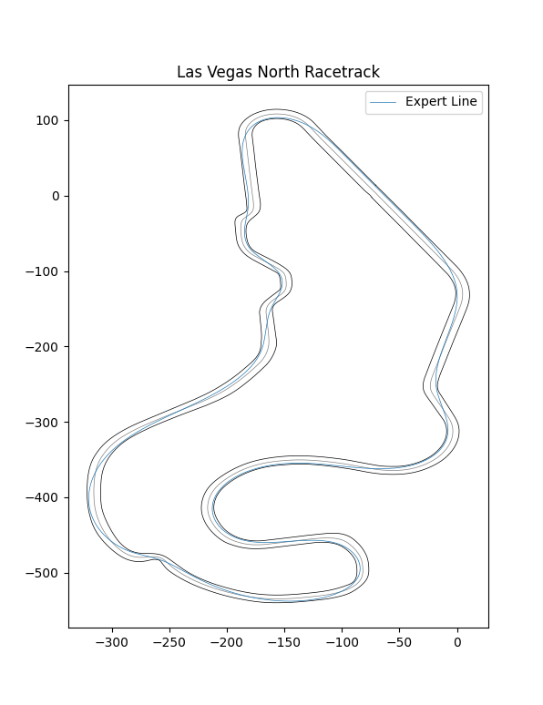

Racetracks & L2R Datasets¶
Changing the Track¶
Our environment uses three racetracks in the racing simulator, all of which are modeled off of real-world racetracks. The first is the North Road track at Las Vegas Motor Speedway located in the United States. The second is modeled off of the Thruxton Circuit track located in the United Kingdom. The third is Anglesey National based off the track at the Anglesey Circuit.
Warning
The LVMS track is currently used as an evaluation track, so its map will remain unavailable.
In the parameters file, you can specify the track you would like to use in the params.yaml file located in sim_kwargs as follows:
sim_kwargs:
racetrack: ['Thruxton', 'AngleseyNational'] # 'VegasNorthRoad' is used for evaluation
...
If more than one track is specified, the environment will randomly select a track at the beginning of each episode by default. Furthermore, the beginning of each episode will be a randomly selected point on the track unless the environment is in evaluation mode.
env.eval() # start episodes at the finish line
env.training() # start episodes at a random location
L2R Dataset¶
Some users may wish to pre-train models, such as an encoder or segmentation model, on a sample of images from the vehicle’s camera. While you can collect your own data from the environment, we provide datasets of each training track for such purposes. The Thruxton dataset includes 10,600 complete transitions including the sensor data, camera image, and action executed by the MPC agent <baselines.html#Model-Predictive-Control>, so it can also be used for immitation based approaches. This data was collected across 9 full laps around the Thruxton circuit track.
Images were saved using `numpy.savez_compressed()` with arrays pose_data and image. The images are in RGB format with a width of 512 pixels, height of 384 pixels, and a field of view of 90 degrees. Loading the images into a numpy array can be done as follows:
import matplotlib.pyplot as plt
import numpy as np
# load transition 100
filename = './transitions_100'
transition = np.load(filename + '.npz')
# view files, output is: ['image', 'multimodal_data', 'action']
print(loaded.files)
# pose_data is of shape (30,), image (384, 512, 3), and action (2,)
sensor_data, image, action = transition['multimodal_data'], transition['image'], transition['action']
# save the image
plt.imsave(f'{filename}.png', transition['image'])
Racetrack File Format¶
The racetrack files are in JSON format. Each contains coordinates of the inside, outside, and center lines of the track in East, North, Up convention. The ENU coordinate system is a local coordinate system that requires a reference point, which is also included in the racetrack files. Our RL environment converts the coordinates of the vehicle to ENU before returning them from the step() method.
Basic Visualization of Tracks¶
VegasNorthRoad has an expert trajectory included which some users may find useful for immitation learning approaches. Users are certainly welcome to generate their own expert trajectories.
{kind=link}
The Thruxton Circuit track is known for its high speeds which will present unique challenges to drivers.

The following figure is from the Anglesey Circuit website highlighting the highly technical features of this exciting track.